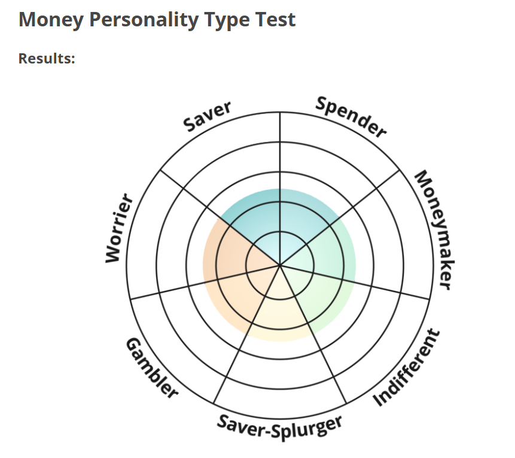

Financial literacy is the understanding of key financial concepts such as budgeting, saving, investing, and credit management. It equips individuals with the knowledge and skills needed to make sound financial decisions and grow their wealth wisely.
With financial literacy, young people are empowered to avoid common financial pitfalls, make smart investment choices, make sound financial choices and build strong financial futures. Understanding how to manage money effectively—and how to invest it strategically—is crucial for both short-term stability and long-term success.
Knowing your money personality can help you make better financial decisions that align with your values and priorities. Take this test to find out!
https://www.idrlabs.com/money-personality-type/test.phpHow the test determines your personality?
